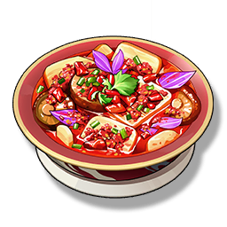

Champion Hotpot
Supplies

Increases the Crit. Rate of all Resonators in the team by 30% for 30 minutes, only effective for the player's Character in multiplayer games.
The hot pot loaded with a lot of Victor Savor, hot, spicy, and delicious.
Chixia believes, this is the best hot pot in the world.
But for those who don't like spicy, don't gulp it down, otherwise... be careful with your stomach.